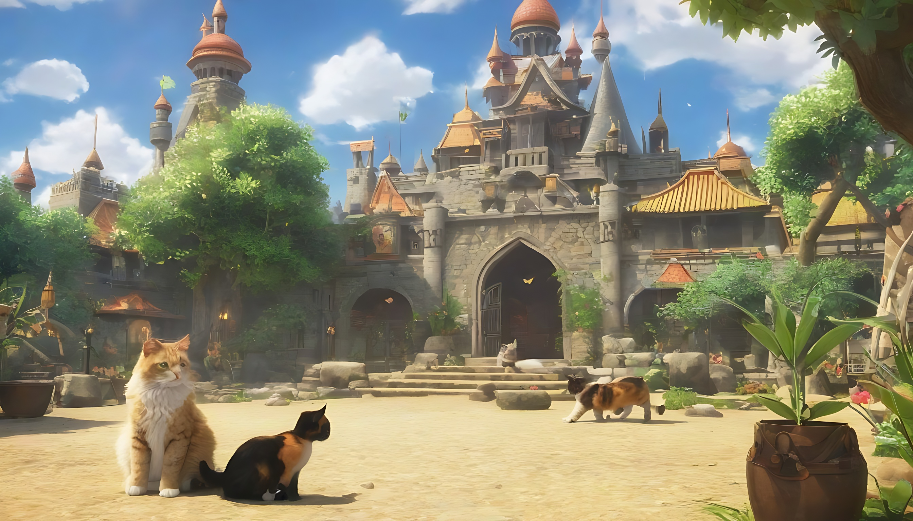

Welcome to Cat Kingdom
Welcome to the Cat Kingdom! Discover the enchanting world of feline wonders. Embrace the charm, explore the playfulness, and revel in the magic of cats. Join us on this delightful journey of whiskers and purrs.

Welcome to the Cat Kingdom! Discover the enchanting world of feline wonders. Embrace the charm, explore the playfulness, and revel in the magic of cats. Join us on this delightful journey of whiskers and purrs.
Floating high above the Cat Kingdom are the Cloud Nap Islands. Cats are said to ascend to these fluffy islands for the most restful naps, surrounded by soft clouds and gentle breezes.
Every cat in the Cat Kingdom leaves behind magical glow-in-the-dark pawprints as they roam. These ethereal prints not only mark their territories but also light up the paths they tread at night.
Deep within the Cat Kingdom, there's a legendary library filled with ancient scrolls and books known as the Library of Cat Wisdom. Cats can be seen poring over these tomes, gaining insight into the secrets of the universe.
Once a year, cats from all corners of the Cat Kingdom gather under the moonlight for the Moonlit Catnip Festival. It's a celebration of abundance, joy, and the magical properties of catnip.